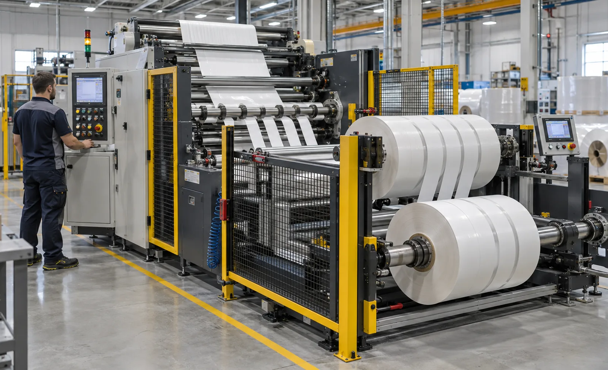
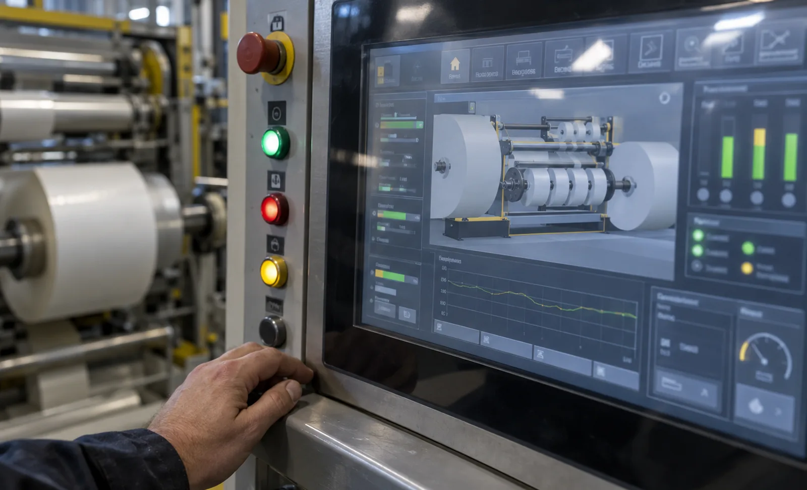

Published September 22, 2026 | By HDPTH Technical Editorial Team

The HMI is the only part of a slitter rewinder the operator touches all shift, and it is usually specified in one line of the quotation. Screens get compared by diagonal size while the questions that cost money stay unasked: how many taps to change width, whether a fault is explained or coded, who can alter tension parameters, and whether a night shift can understand the interface at all. This guide turns those questions into procurement requirements you can test at FAT: tasks, screens, alarms and permissions rather than a diagonal dimension on a quotation line.
Screen size, placement and what is visible at once
Size follows viewing distance and information density. The main operating position needs targets large enough for gloved hands and fonts readable while standing back to watch the web, which argues for a generous panel — but no single screen comfortably carries run view, trending and diagnostics at once. Practical solutions include a large main panel plus a second station at the rewind end, or a layout that separates a permanent status zone from a task zone. Require demonstration under your own lighting, at your own viewing distance, and with gloves on.
Recipe screens and changeover friction
A recipe should carry everything that defines the run: material data, width set and knife positions, tension setpoints and taper, lay-on pressure, splice settings and inspection limits. Loading it must configure the whole machine, and saving must capture the state actually running rather than what was typed. Naming should be searchable by customer or product code, and every stored parameter must be visible so operators can see why two similar products differ. This is where a good interface meets hard numbers in short-run changeover performance.
| Interface element | What to require | Sign of weakness |
|---|---|---|
| Run view | Speed, tension, diameter, counters and current step visible together, no navigation | Critical values hidden in sub-screens during running |
| Recipe handling | Single load configures every axis; save captures the running state | Parameters spread across several manual screens |
| Alarm presentation | Plain sentence with subsystem, condition and first action | Numeric codes requiring the manual |
| Diagnostics | Trending of tension and speed; I/O and drive status as text | Only live values, no history or trends |
| Access control | Operator, technician and engineering levels with logging | One password everyone shares |
Alarms and diagnostics that shorten downtime
Downtime is more interpretation than repair. A numeric code sends the operator to a manual or a phone call; a sentence naming the subsystem, condition and first action removes that step. Ask to see the alarm list — not during a scripted demo but triggered live, including nuisance events such as web break detection. Require timestamps, sequence, duration and acknowledgement history, per-event counters, and export so the data flows into the same reporting layer used for downtime analysis.
Language, units and shift-proof wording
Every text string should be switchable at runtime, not by reloading a project. Confirm which languages ship with the machine, whether they cover alarms and guided sequences rather than just menu titles, and whether your team can add translations locally. Units must be selectable — metric and imperial, grammage or thickness, metres or feet — and unit changes must propagate into recipes and reports. Avoid icon-only navigation: labelling with words survives staff rotation and reduces reliance on tribal knowledge.
Permission levels and the change log
Three levels cover most plants. Operators select recipes, start, stop and acknowledge alarms but cannot touch parameters that shape roll structure. Technicians reach knife calibration, sensor offsets and maintenance screens with counters. Engineering owns drive parameters, tension loop tuning and recipe creation. Each level change is logged with user and timestamp, because every quality investigation begins with „who changed what“ — a log answers faster than interviews, and it complements your data logging and ERP integration.
Guided sequences for rare tasks
The valuable guidance is not the daily routine but the rare procedure: knife change, threading through the line, splice preparation, screen and core changes during grade switches. Short step-by-step sequences with confirmation keep an infrequent operator out of the manual and prevent broken blades and mis-threaded webs. Ask what sequences exist, whether they cover automatic threading and knife handling, whether they exist in your languages, and whether your team can edit them after commissioning.
A thirty-minute evaluation at FAT
- Ask an operator who has never seen the machine to load a recipe and start a run; count taps and hesitations.
- Trigger a real fault and read the message exactly as the night shift would, without the manual.
- Change one recipe parameter and verify the log records user, timestamp and old value.
- Switch language and units mid-run, then confirm recipes and reports follow the change.
- Open the guided knife-change sequence and follow it literally; note where it assumes knowledge.
- Read the screen from the operator’s normal working distance under plant lighting, wearing gloves.

Specifying the operator interface?
Send HDPTH your product range, shift pattern, languages and team structure. We will return an HMI specification covering recipes, alarms, permissions and guided sequences — testable at FAT.
Submit Your Project InquiryQuestions to put to every vendor
- Which languages ship with the machine, including alarms and guided sequences?
- How many permission levels exist, and is every parameter change logged?
- Can trends and diagnostics be shown on a second station during running?
- Can my team add or edit guided sequences after commissioning?
- Will you let my own operator run the thirty-minute test at FAT?
Building the wider data picture?
Continue with our guides to recipe management and operator training so the interface supports the people using it.
Contact HDPTHFrequently asked questions
What HMI screen size makes sense on a slitter rewinder?
Size follows viewing distance and information density, not budget. A panel read from a metre away with large targets suits the main operating position, but it rarely has room for trends, diagnostics and recipe editing at once. Many lines therefore use one large main panel plus a second smaller station at the rewind or unwind end. Whatever the configuration, require readable fonts at working distance, touch targets large enough for gloved hands, and legibility under your plant lighting rather than in a showroom.
How should recipes be structured to reduce changeover mistakes?
A recipe should contain every parameter that defines the run: material, width set, knife positions, tension setpoints and taper, lay-on pressure, splice settings and any inspection limits. Loading one must configure the whole machine, and saving must capture the state actually running rather than the state typed in. Naming should be searchable by customer or product code, access to editing should be permission-controlled, and every change should be logged so the plant can trace which setting produced a given roll.
Why should alarms be plain text with history?
Because downtime is spent interpreting, not repairing. A numeric fault code sends the operator to a manual or a phone call; a sentence naming the subsystem, the condition and the first action removes that delay. History adds the part that matters later: timestamps, sequence, duration and acknowledgement, which show whether the machine stopped once or thirty times in a shift. Require text alarms at every level, a filterable history, counters per event, and export for your own reporting.
Which user levels and permissions are needed?
At least three: operator, supervisor or technician, and engineering. Operators need to select recipes, start, stop and acknowledge alarms without touching parameters that affect roll structure. Technicians need knife calibration, sensor offsets and maintenance screens. Engineering alone should own drive parameters, tension loop tuning and recipe creation. Every level change should be logged with user and timestamp, because most quality investigations start with the question of who changed what, and permission logs answer it faster than interviews.
Are guided setup animations worth specifying?
Yes, for the tasks that are rare, risky and easy to get wrong: knife change, threading route, splice preparation and screen changes during grade switches. A short, step-by-step sequence with confirmation keeps an infrequent operator out of the manual and reduces broken blades and mis-threaded webs. Ask what sequences exist, whether they are available in the languages you need, and whether they can be edited locally so your own best practice can be built in after commissioning.